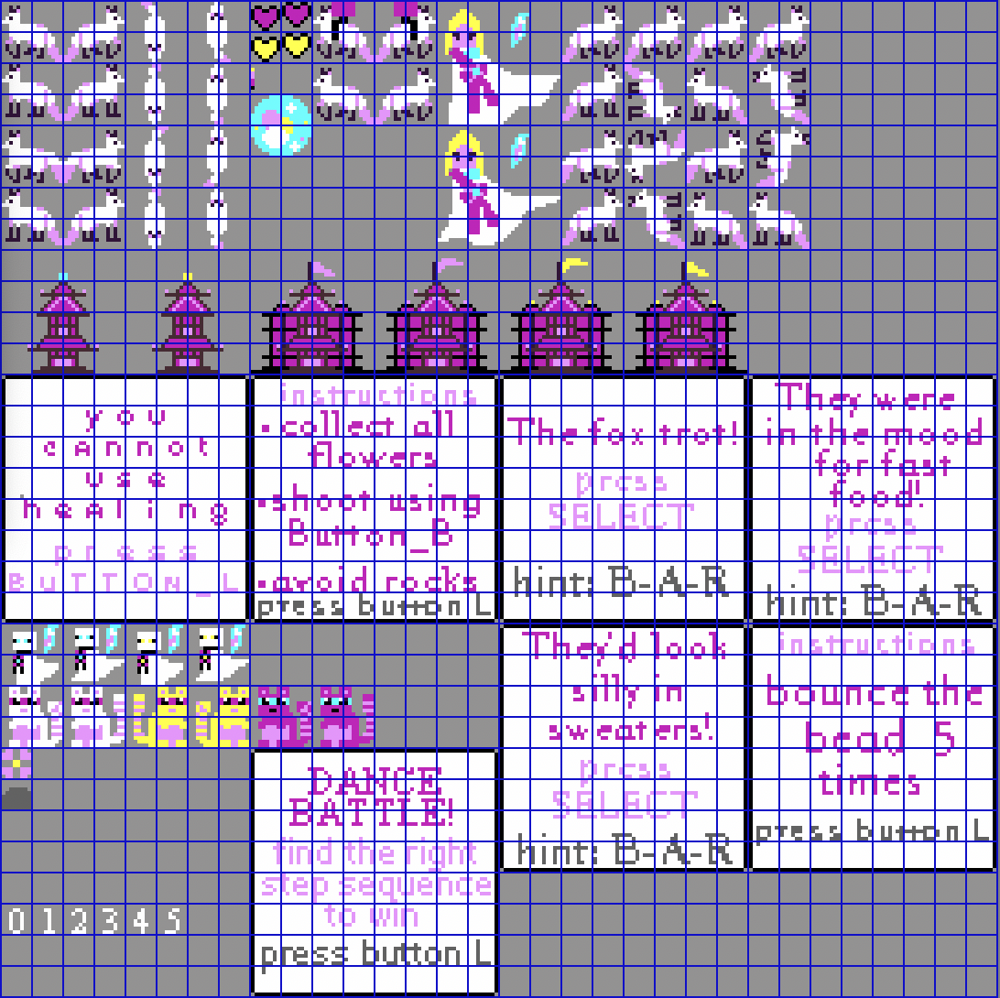
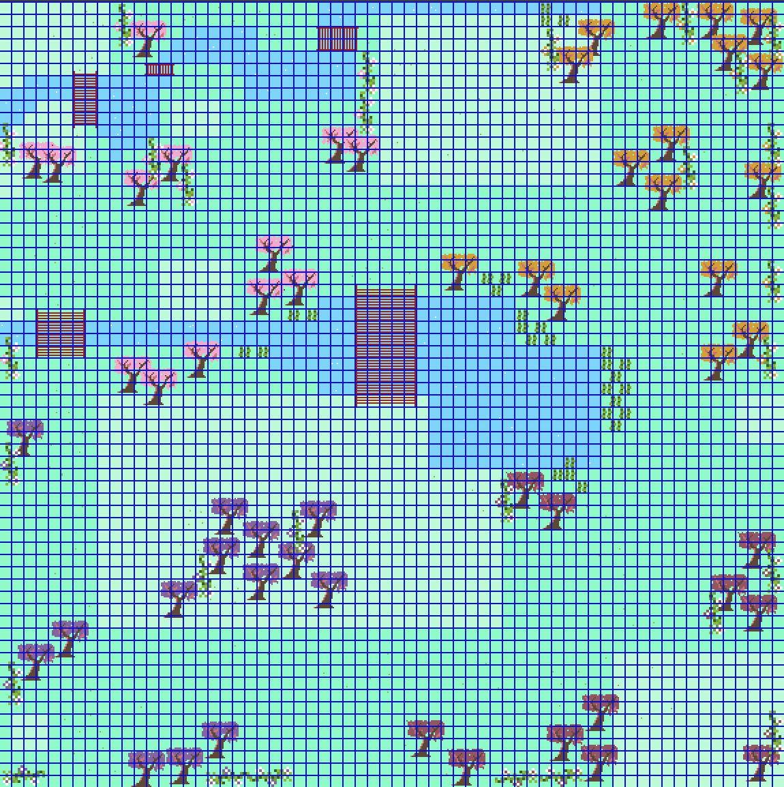
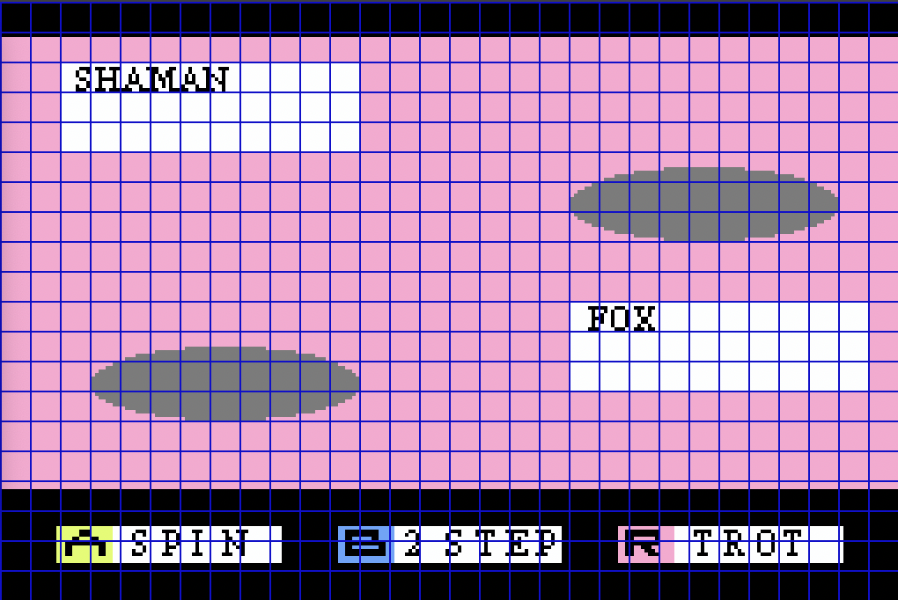

CEISMC
In Spring 2023, I started working with the Center for Education Integration Science, Mathematics, and Computing.
I joined the communications team as a student web developer and used Drupal 9 to create new content and sites.
When it was necessary, I would perform a UX audit on existing sites and use Figma to create page designs and ideas.
Below I have linked some of my designs from Figma. The new site has not released for the public yet.



Figma explanations